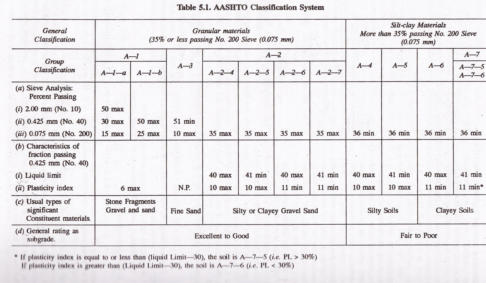

This chart can be used to classify soils under the AASHTO
system.
Below is a short description of classification groups:
Subgroup A-1a : Includes those materials consisting predominantly of stone fragments or gravel
Subgroup A-1b : Includes those materials consisting predominantly of coarse sand, either with or without a well-graded soil binder
Subgroup A-3 : Fine beach sand or fine deser loess sand without silty or clay fines or with a very small amount of nonplastic silt
Subgroup A-2-4 : Includes various granular materials containing 35% or less passing the 0.075mm (No. 200) sieve and with a minus 0.425mm in having the characteristics of the A-4 and A-5 groups
Subgroup A-2-5 : Includes various granular materials containing 35% or less passing the 0.075mm (No. 200) sieve and with a minus 0.425mm in having the characteristics of the A-4 and A-5 groups
Subgroup A-2-6 : Includes materials similar to that described under subgrades A-2-4 and A-2-5, except that a fine portion contains plastic clay having the characteristics of the A-6 or A-7 group
Subgroup A-2-7 : Includes materials similar to that described under subgrades A-2-4 and A-2-5, except that a fine portion contains plastic clay having the characteristics of the A-6 or A-7 group
Subgroup A-4 : The typical materials of this group are the nonplastic or moderately plastic silty soils
Subgroup A-5 : Similar to that described under group 2-4, except that it is usually of diatomaceous or micaceous character
Subgroup A-6 : Usually a plastic clay having 75% or more passing the 0.075mm (No. 200) sieve
Subgroup A-7-5 : Includes materials with moderate plasticity indexes indexes in relation to liquid limit
Subgroup A-7-6 : Includes materials with high plasticity indexes in relation to liquid limit